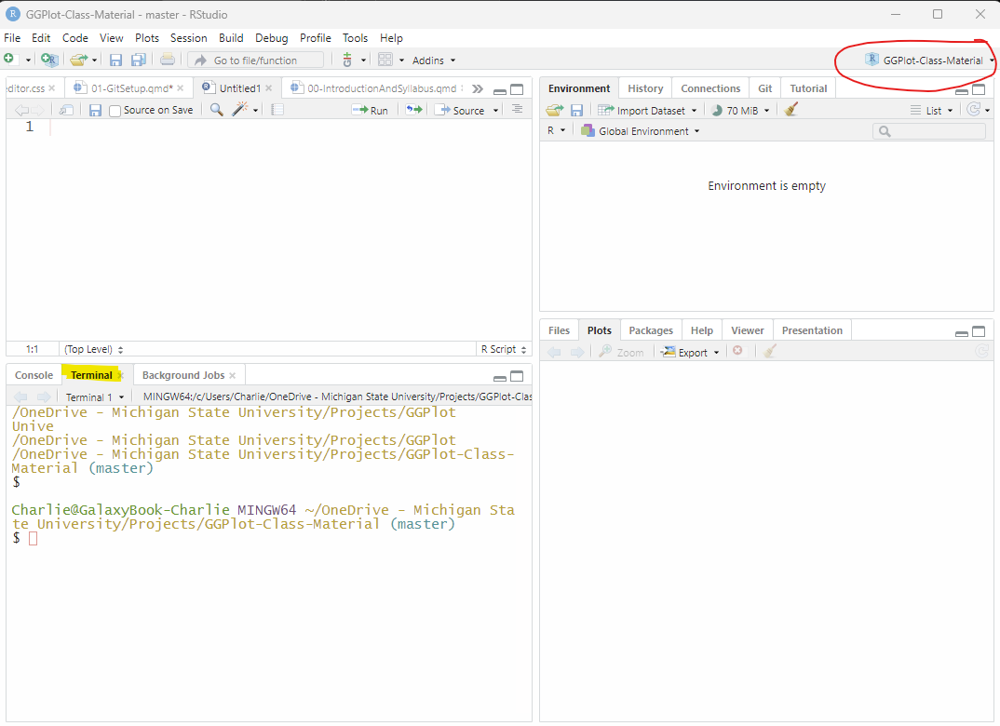
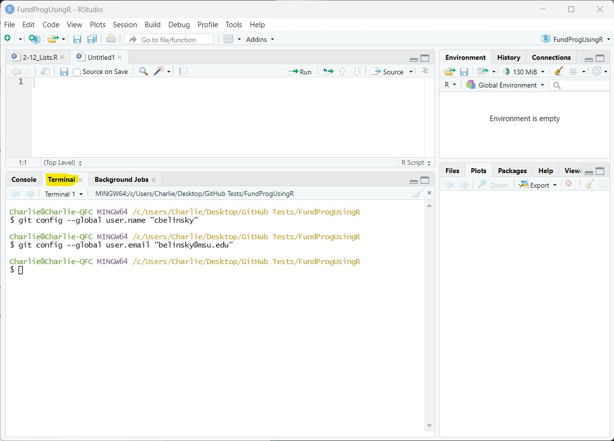
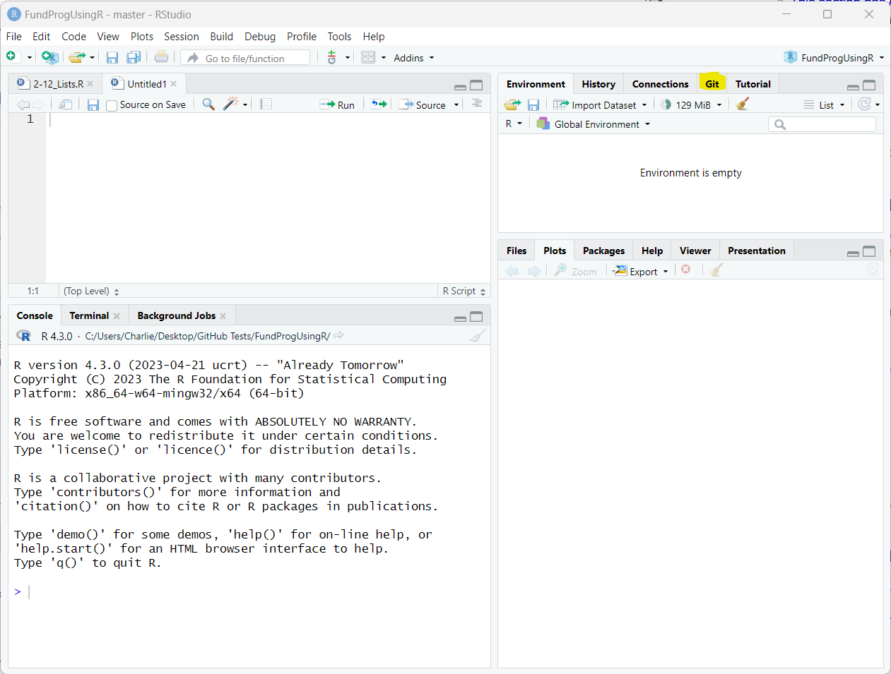
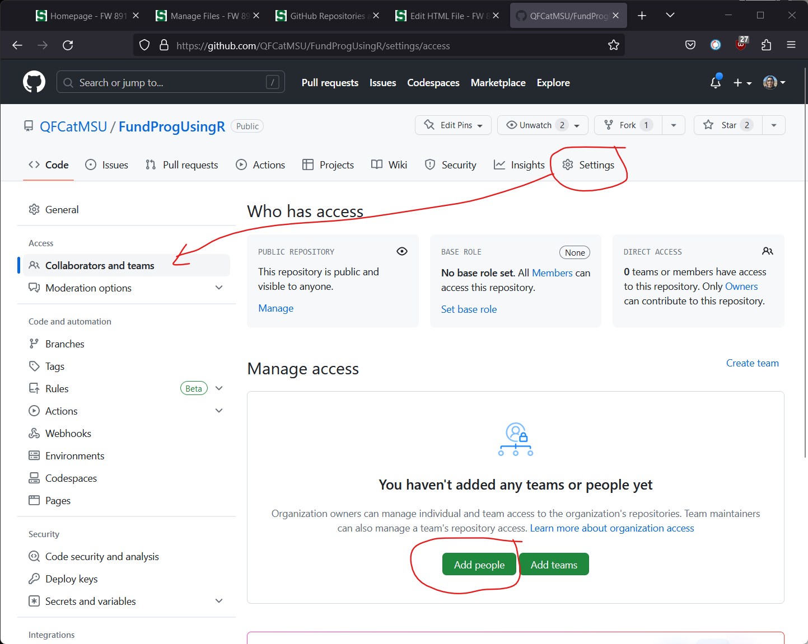
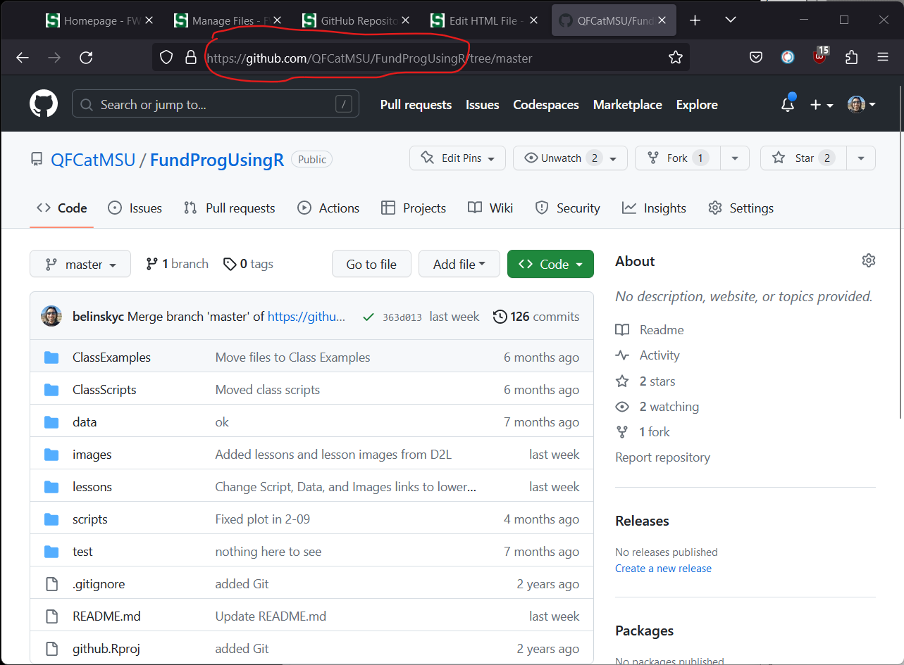
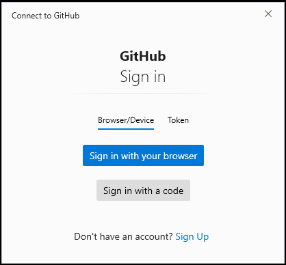
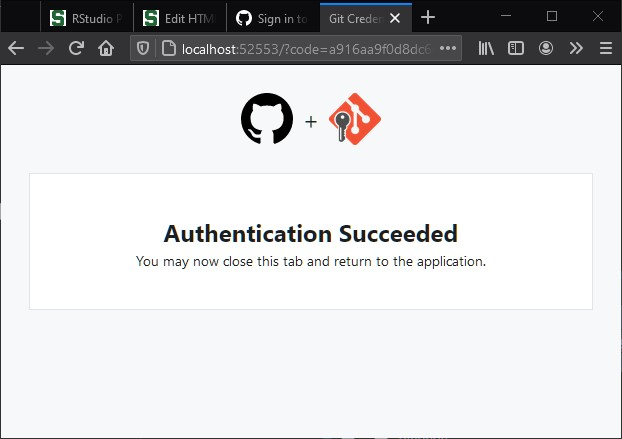
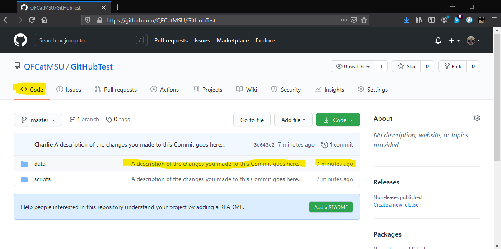
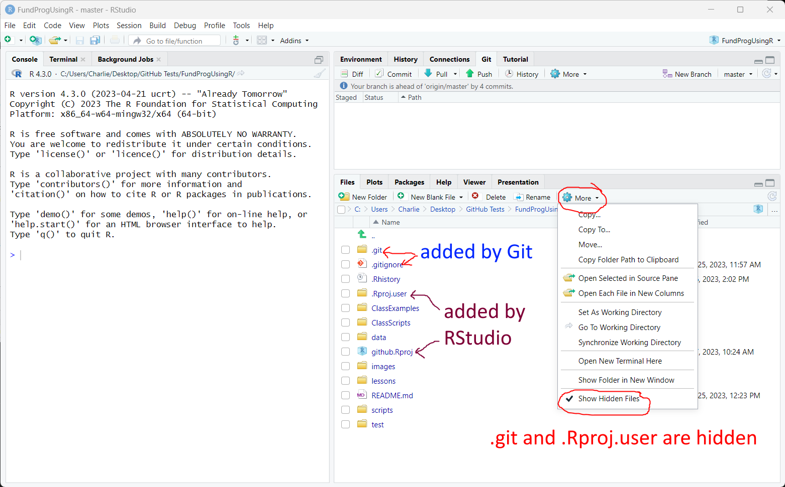

Git Setup
0.1 Notes
- If I create the GitHub repo then they still need to set up RStudio Proj
1 Git vs. GitHub
Git and GitHub are two terms that are often conflated. Git is versioning software – you use Git on your computer to create a retrievable history of your project. With this project history, you can bring back previous versions of files or your entire Project. Git calls this a repository.
GitHub is an online software development platform where you can store, sync, and share your Git repository. When combined, Git and GitHub make a very powerful project-management system. For this class, we will use Git and GitHub for your class assignments.
While Git and GitHub are very powerful tools, they are not intuitive and there is a pretty high-barrier to entry. One reason is that you have to use the Terminal a lot.
2 Terminal
We will be using the Terminal to setup and use Git with your RStudio Project. The Terminal in RStudio is a tab in the lower right area in RStudio. Note: for a bug-free experience, you need to have RStudio version 2023.12 or later.
Most of the Terminal command used in this lesson will only work if you are in the correct RStudio Project – in the upper-right corner of RStudio.

3 GitHub ID
If you do not have a GitHub account then go to http://github.com and click Sign in to sign up for an account. For this class, it is OK to just use a free account. Educators, students, and non-profit workers can get a professional account for free. The main advantage to a professional account is that you have more access control over people you invite to your repository.
4 Installing Git
Git is software that you install on your computer and it allows you to version, and create a history of, your project. For this class, we will use Git with an RStudio Project but Git can be used with any project.
4.1 Install Git on Windows
Click here to download and install Git – click on Download for Windows (version as of February 2024 is 2.44)
Make sure RStudio is closed while Git is being installed.
You can use all the default installation settings
4.2 Install Git on Mac
There are multiple options on the Download for macOS page but I recommend Homebrew, which is a useful tool for any programmer using a Mac because it gives you access to a bunch of programming tools (including Git).
Homebrew installation:
Go to the Homebrew homepage
Copy the text under the heading Install Homebrew
Paste the text in a Terminal window (RStudio has a Terminal tab in the bottom-left pane)
- Be patient – it takes time to install!
When Homebrew is finished installing, install Git by typing in the Terminal:
brew install git 4.2.1 Alternate installation for Git on Mac
If you cannot get Homebrew to work the MacPort ption is a good alternative. XCode will also work but it is a huge installation (at least 20GB), and most of it is not going to be used. The Binary Installer option is the easiest but, as of Febraruary 2024, is too outdated.
5 Configuring Git on your computer
To use Git for your project, you first need to configure Git on your computer with a username and email. The username and email are used by Git and GitHub to identify who made what changes in the project history. You should use your Git username and email.
Git will allow you to choose any username and email – Git will not check if you put in the wrong values. If you put it the wrong values, then you are potentially giving someone else credit for your work.
5.1 Adding the username and email
We will use the RStudio Terminal tab to enter these values.
The first command sets the global user name (replace userName with your GitHub ID):
git config --global user.name "userName"And the second command sets the global user email (replace email with your GitHub email):
git config --global user.email "email"warning: everything will seem to work if you omit --global but you will have authenticate problems

5.2 Viewing the configured values (optional)
You can check if you successfully changed the username and email by executing these lines in the Terminal tab:
git config user.name
git config user.emailAfter executing the two above command, your Terminal tab should look similar to this:
$ git config user.name
cbelinsky
$ git config user.email
belinsky@msu.eduTesting the git configuration using the RStudio Terminal tab
6 Add Git to your RStudio Project folder
We are now going to add Git to the same folder as your RStudio Project. This creates a Git repository in the folder.
To add a Git repository to your RStudio Project folder
Make sure your RStudio Project is open
- Look for your Project name in the upper-right corner
Type
git initin the Terminal- You should get a message in the Terminal like:
Initialized empty Git repository in C:/Users/Charlie/...
- You should get a message in the Terminal like:
Restart RStudio
- note: clicking Session -> Terminate R… will also work
6.1 RStudio Git tab
When you add Git to an RStudio Project folder, a Git tab will appear in the upper-right window.
RStudio’s built-in Git interface handles the most commonly performed Git functions.

7 GitHub repository
A GitHub repository is an online storage location that syncs with the Git repository on your computer. To link the two, you will need the URL for the GitHub repository.
You can either:
Use the URL I provided for you (advantage: it’s easier – you can skip to Linking your Git repository to a GitHub repository
Create your own repository and use that URL (advantage: it is your own repository and you learn more about GitHub)
8 Create a GitHub repository (optional)
When logged in to GitHub (fig ##):
Click on the + at the top-right and choose New Repository
Choose a repository name (any name you want – just remember you are sharing it!)
Choose whether you want the repository to be Public or Private (this can be changed later)
Public means that anyone with the repository link can view (but not edit) your files
Private means that only users you add in Settings -> Manage Access can view the repository
Click Create Repository

8.1 Inviting the instructor to your repository (optional)
To invite a user (or, as GitHub calls them, collaborator) to your repository:
Go to the GitHub home page for your repository and click Settings
Click Collaborators and teams
Click Add people
You can use either the person’s GitHub ID or their email address associated with their GitHub ID
in this case: belinsky@msu.edu or belinskyc

8.2 Get the GitHub URL (optional)
To link a Git repository with this GitHub repository, you will need the URL for the GitHub repository. After you create the new repository, a window will appear (fig 7) with the URL at the top in the Quick Setup section. Copy this URL and save it– you will use it in the next section.

The GitHub repository link is the URL that takes you directory to the online project. A GitHub repository link is always in this format:
https://github.com/<github_user_or_team_name>/<github_repository_name>.git
Note: .git is optional
So, if my GitHub username is QFCatMSU and my repository name is gitHubTest then the link is (yes, this repository exists):
https://github.com/qfcatmsu/githubtest.git
Note: capital/lowercase does not matter
If you lose the Quick Setup page then the URL is going to be the part of the URL for your repository circled below:

9 Linking your Git repository to a GitHub repository
In this section we are going to link your Git repository, which is in the same folder as your RStudio Project, with your GitHub Repository. The GitHub repository will be the online version of your Git repository and can be shared.
Warning: This only works if the GitHub repository is empty – we will deal with linking to a non-empty repository in a future lesson.
Type the line below into the RStudio Project. Replace the URL with the URL for your GitHub repository (or the URL I provided). Make sure your are in your RStudio Project.
git remote add origin "https://github.com/myUserName/myRepository.git"Note: In Windows, Control-V does not paste in a Terminal window, but right-click -> Paste works
10 Uploading to the GitHub repository
Git/GitHub is asynchronous. Changes to your local project are not automatically uploaded to GitHub – you need to explicitly upload the changes.
To upload your changes to GitHub, in the Terminal type:
git all -Agit commit -m "A message about the changes to your project"git push -u origin master <main??><explain each line>
10.1 Authenticating with GitHub
GitHub will ask for authentication if this is the first time you have connected to a GitHub repository on this computer:

When you click Sign in with your browser, your default browser will open to the GitHub login page. This will work if your default browser is a fairly recent version of Firefox, Safari, Chrome, or Edge.
After you login you will get an Authentication Successful window:

11 Verifying the change on GitHub
Let’s go to your GitHub account to verify that the project files are there (fig 11):
Log in to GitHub
On the left side, there is a section called Repositories.
Click on the repository called <your-user-name>/<your-repository-name>
Choose the Code tab (you are probably already on it)
You should notice that the files changed in the newest Commit have your Commit message attached (my Commit message: “A description you made…”) and the last commit for these files is recent (in this case: 7 minutes).

12 App
Add the instructor to the pository
Create a n Issue to GitHub and say that you have finished this lesson
Wait… the instructor will add something to your repository
After instructor responds,
git pull
13 Extension: Project folders and Git Repositories
Let’s look inside the project folder in the RStudio Files tab (note: you can see the same thing in your operating system’s file explorer). By default, the Files tab will not show hidden files, we can change that by clicking on More -> Show Hidden Files (fig ##).
We saw in the last lesson that RStudio added a folder (.RProj.user) and a file (*.RProj). This is what makes this project folder an RStudio Project.
Similarly, Git adds files to the project folder to make it a Git repository.
The two objects that get added by Git are:
.gitignore: this file is used to indicate files you do not want to be a part of the repository (i.e., files that are not shared nor versioned)
.git: this folder is hidden and contains the history of your project
- you very occasionally need to access this folder – otherwise do not mess with it

14 Extension: Fixing an incorrect link
This section is only needed if the URL for the GitHub Repository was incorrectly typed or got changed.
If after you typed in the three lines in the Terminal, you received this message:
fatal: remote origin already exists
<this will happen after a push>
Then you first need to remove the current GitHub repository (i.e., the origin):
git remote rm origin
This cleans up the whole operation so you can start fresh. After this, you need to redo the steps in section ##.
<list all steps again? (link, stage, commit, push)>